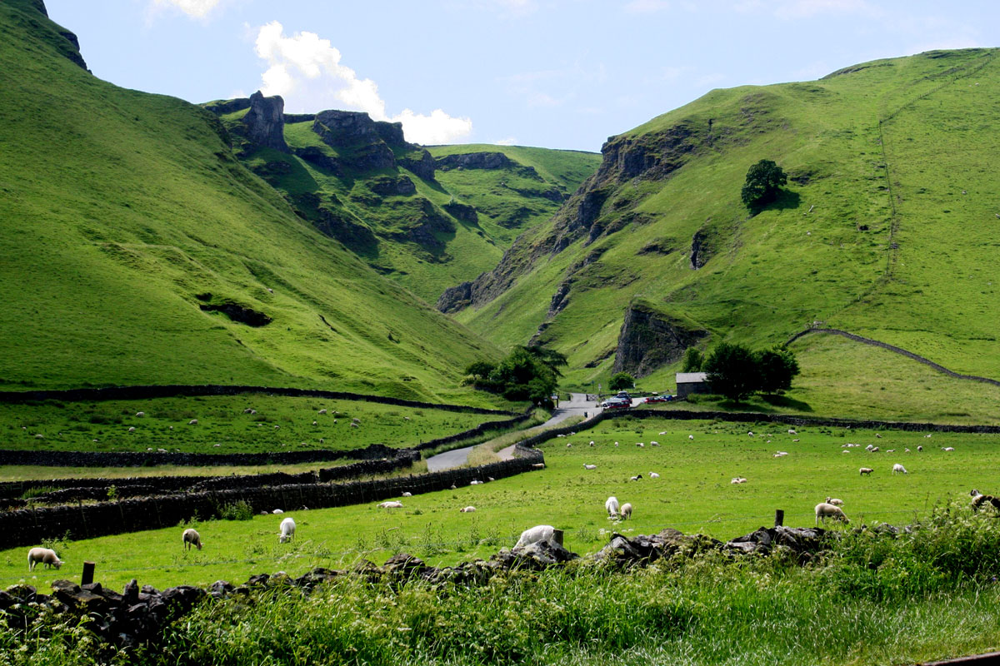

Cycling
Once you learn how to cycle, you never forget the skill.
Below you can find some proposed venues.
Cycling in the Olympic Athletic Center of Athens, home of the 2004 Olympic Games. Great for relaxed cycling

This is Peak District National Park. Great for cycling outdoors.